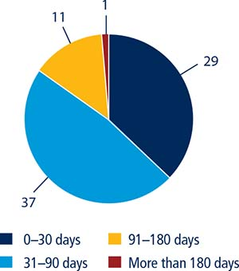

Annex: Selling to the Government
Why public procurement matters
Public procurement is the process of purchasing goods, services or works by the public sector from the private sector. The range of industries involved in public procurement is therefore as wide as what a government needs to function properly and to deliver public services to its citizens. Whether for the construction of a school or to purchase hospital supplies, to secure information technology services in public buildings or renew a fleet of city buses, governments must constantly turn to the private sector to supply goods and services. Overall, public procurement represents on average 10 to 25% of GDP, making procurement markets a unique pool of business opportunities for the private sector.1
Given its significant size, public procurement can impact the structure and functioning of the market beyond the mere quantities of goods and services purchased.2 For instance, through its procurement policies, the public sector can affect the incentives of firms to compete in a number of ways.3 In the short-term, public procurement can impact competition among potential suppliers; in the long-term, public procurement can affect investment, innovation and the competitiveness of the market.4 Indeed, research has shown that where entry barriers to procurement markets are kept to a minimum and the competitive process can play its role, the private sector thrives and tends to compete and innovate more.5 In fact, where businesses—particularly small and medium-size enterprises—have a fair chance to compete for government contracts, it can give them the necessary boost to further develop their activity, and even propose innovative goods and services that will meet demand in other markets.6 Competition in procurement markets is therefore critical on many levels and procurement policy may be used to shape the longer term effects on competition in an industry or sector.7
▪ The selling to the government indicators aim to assess the ease of accessing and navigating public procurement markets across 78 economies, based on consistent and objective data that can inform policy makers in their procurement reform agenda.
▪ The selling to the government indicators measure aspects that are relevant to improving the ease with which companies can do business with governments across economies: access to electronic procurement, bid security, payment delays, incentives for small and medium-size enterprises and complaint mechanisms.
▪ There is a clear move toward the use of electronic public procurement systems. Indeed, 97% of the economies analyzed have one or more online portals dedicated to public procurement.
▪ Of the economies included in the selling to the government indicators close to 90% impose a bid security deposit requirement that suppliers must fulfill for their bid to be accepted.
▪ In 37% of the economies included in the selling to the government indicators payment occurs within 30 days on average while in 47% of the economies suppliers can expect to receive payments between 31 and 90 days following completion of the contract.
BUILDING NEW INDICATORS: SELLING TO THE GOVERNMENT
Public procurement laws and regulations—and their implementation in practice—can encourage competition by increasing suppliers’ confidence in the integrity and efficiency of the procurement process.8 That will, in turn, allow government agencies to deliver better services and give the public more confidence in the way public funds are spent.9 To build and maintain a reputation as a trustworthy and efficient business partner, which can increase competition in later procurements, the purchasing entity has to pay promptly when payment is due in return for adequate performance. The legal framework should specify a timeframe for making payments and provide additional compensation when the procuring entity fails to pay on time. Indeed, delays in payment can have severe consequences for private sector suppliers, particularly small and medium-size enterprises which typically do not have large cash flows.10 Companies may also be deterred from responding to public calls for tender if it is difficult to access the relevant information in a timely fashion, if delays and extraordinary costs are expected to be incurred throughout the procurement process and if unpredictable regulations create additional burdensome hurdles.
The selling to the government indicators aim to assess the ease of accessing and navigating public procurement markets across 78 economies, based on consistent and objective data that can inform policy makers in their procurement reform agenda. The indicators have been developed by the Benchmarking Public Procurement project, an initiative developed at the request of the G20 Anti-Corruption Working Group, in order to measure transaction costs of public procurement contracts.11 The Benchmarking Public Procurement data for indicators selected for the analysis presented here are available on the Doing Business website.
There is a recognized need for more research on good practices and challenges in the public procurement sector.12 Due to the lack of comparable global statistics there has been limited research analyzing how legal frameworks and government policies in public procurement enhance competition and private sector development.13
The most comprehensive tool that exists in the field of public procurement is the Use of Country Procurement Systems—an initiative led by the Organisation for Economic Co-operation and Development (OECD) with the cooperation of other international financial institutions including the World Bank Group—which aims to increase reliance on domestic procurement systems through donor-funded projects. In 2008 the World Bank launched a program for the use of country systems in bank-supported operations. Through this program a number of economies have been selected to be assessed in a comprehensive manner. Tools like the Country Procurement Assessment Reports (CPAR)—which review the legal and institutional framework for procurement and recommend reforms—and the Methodology for Assessing Procurement Systems (MAPS) were used to assess the systems for public procurement, public financial management and governance in these economies.14 Other integrated diagnostic tools such as the Public Expenditure and Financial Accountability (PEFA) instrument were also created.15
The selling to the government indicator set will generate data that will directly support national priorities and help economies to strengthen their procurement systems and ultimately achieve sustainable development outcomes. The data will also help economies to promote private sector competition by addressing the constraints to competition in public procurement. The selling to the government indicators measure aspects that are relevant to improving the ease with which companies can do business with governments across economies: access to electronic procurement, bid security, payment delays, incentives for small and medium-size enterprises and complaint mechanisms (figure 11.1).
To ensure that the data are comparable across the 78 economies covered, several assumptions about the bidding company, the procuring entity and the type of services being procured were used during the data collection process and analysis. In particular, a procuring entity which is a local authority in the main business city is planning to resurface a road for a value equivalent to 91 times the economy’s income per capita or $2 million, whichever value is higher. It initiates a public call for tender following an open and competitive procedure. BidCo, a private, domestically-owned limited liability company, is a bidder.
WHERE SELLING TO THE GOVERNMENT IS EASIER AND WHY
Accessing information and services online: accessibility and transparency
By streamlining the procurement process and supporting virtual access to information, the digitalization of public procurement—or e-procurement—lowers costs, reduces delays, maximizes efficiency and increases transparency. Research has shown that increased publicity requirements reduce government spending and maximize the effectiveness of their public procurement systems.16 As a result, the procurement process becomes much simpler and cost-efficient, especially for companies with limited resources. In the past 10 years e-procurement has developed rapidly as more and more economies have recognized its added value and engaged in a transition toward digitalization.17 The selling to the government indicators examine which materials can be accessed online and whether a supplier can submit a bid, sign the procurement contract and request payments through an online platform.
A well-functioning e-procurement portal which serves as a one-stop shop to access all public procurement opportunities and associated information increases the participation of small and medium-size enterprises in public calls for tender.18 In Chile, for example, 10 years after the ChileCompra portal was implemented the share of contracts awarded to small and medium-size enterprises had risen from 24% to 44%.19 The Korean e-procurement system, KONEPS, is another example of how a well-functioning portal can enhance efficiency, effectiveness and integrity of public procurement and act as a driver for investment and economic growth.20 E-procurement also lowers the risk of fraud and corruption by limiting one-on-one interactions between buyers and sellers21 and as such is recognized as an effective tool in combating corruption.22 An e-procurement system increases transparency by collecting and publishing public procurement information and enhancing access for suppliers and other stakeholders through standardized and simplified processes. Research has shown that e-procurement improves service quality by facilitating entry for higher quality suppliers and reducing delays to public works projects.23
Procurement portals should support interactions between bidders and public buyers. Accessing information and interacting with public buyers—whether to ask questions or submit a bid—can be a costly and lengthy process for bidders. Having the option to do this online will save significant time and money.
There is a clear move toward the use of electronic public procurement systems. Indeed, 97% of the economies analyzed have one or more online portals dedicated to public procurement. Where economies have made measurable progress in implementing online procurement platforms, some are more advanced than others when it comes to the services offered to the users. Across economies the electronic platforms range from simple websites—that do not support interactions but allow users to merely access tendering information—to sophisticated platforms offering a range of services for conducting the procurement process online. In countries like Australia, Italy, the Republic of Korea, New Zealand and Singapore bidders can access notices of calls for tender and tender documents online as well as submit their bids through an electronic platform. Because of these options bidders in such economies spend less time performing necessary procedures than a prospective bidder in an economy where tender documents have to be obtained in hard copies and bids have to be submitted in person or via regular mail, as is the case in Angola and The Gambia.
Award notices should also be available online. In economies like Sweden the online publication of awards is mandated by law but in other economies such as Burundi, Jamaica and Myanmar bidders are still unable to access the outcome of the tendering process online (figure 11.2).
FIGURE 11.2 E-mail submission of bids is an area where many economies can improve
Source: Doing Business database.
Guaranteeing the seriousness of bids through bid security instruments
When a company submits a bid in response to a call for tender it is often required to post bid security, either in the form of monies or a bank or insurance guarantee. The procuring entity typically holds the security deposit until the procurement contract is signed, after which all deposits are returned to the bidders. Bid security is a valuable instrument for procuring entities because it helps avoid the unnecessary use of resources. The selling to the government indicators measure the legal framework for bid security, the amount and the time for the procuring entity to return the deposit.
Requiring bidders to secure a guarantee or put together a substantial amount of money discourages those firms that may be tempted to approach the bidding process in a manner that is not serious. However, for bid security to fulfill its purpose and not act as a deterrent to companies it should be regulated and of a reasonable amount. A bid security that is too high can prohibit companies with limited resources from participating in the public market. To prevent this from occurring the maximum amount that procuring entities can request as bid security should not be left to their discretion—it should be regulated by law to prevent excessive amounts and guarantee equal treatment. The timeframe for purchasing entities to return a deposit—as well as the decision to cash it—should also be regulated.
Of the economies included in the selling to the government indicators close to 90% impose a bid security deposit requirement that suppliers must fulfill for their bid to be accepted (figure 11.3). However in 16 of these economies the legal framework does not stipulate a maximum amount that the procuring entity can request bidders to deposit,24 leaving it to the discretion of the procuring entity. This is the case in Morocco, among others.
FIGURE 11.3 The bid security is regulated in the majority of economies
Source: Doing Business database.
Note: In Chile the procuring entity will include the amount of the bid security in the tender documents. In the case that the procuring entity fails to include the amount of the bid security in the tender documents, and a bid security is required as part of the offer, the bid security amount will automatically be 2% of the estimated contract price.
Obtaining payment following the performance of contractual obligations
Obtaining payment in due time is of critical importance for businesses, especially small and medium-size ones. Research has shown that delays in government payments directly impact small enterprises as they often need to increase borrowing to offset the shortage of cash.25 Increased delays in public payments have a direct impact on private sector liquidity and profits, thereby reducing economic growth.26 When a supplier is not paid for its good, work or service, it can run into a cash flow problem that will significantly impact its business. Therefore, where public buyers are known to pay their suppliers late and provide no financial compensation for the delay, companies might refrain from doing business with them.
The selling to the government indicators focus on the legal and actual timeframe to process payments. The recognized good practice is that suppliers should be paid within 30 days following the performance of the contract.27 In practice, however, payment delays are frequent in public procurement markets. In 37% of the economies included in the selling to the government indicators payment occurs within 30 days on average (figure 11.4) while in 48% of the economies suppliers can expect to receive payments between 31 and 90 days following completion of the contract. It takes between 91 and 180 days for the supplier to obtain payment in only 14% of economies.28
FIGURE 11.4 Payments are received within 30 days in around a third of economies

Source: Doing Business database.
Payment delays are positively correlated with Transparency International’s Corruption Perceptions Index (CPI) in the sample of 76 economies. Indeed, the average CPI is higher (less corruption) in economies with shorter payment time periods (figure 11.5).
FIGURE 11.5 Shorter payment delays are associated with less corruption

Sources: Doing Business database; Transparency International (https://www.transparency.org/cpi2015/results).
Note: Two economies were excluded from the sample: the Marshall Islands, for which CPI data was not available, and the Dominican Republic, the only economy in which payment delays exceed 181 days.
FIGURE 11.6 Complaints lodged with the procuring entity are decided faster
Source: Doing Business database.
Increasing the participation of small and medium-size enterprises in the public procurement market
With small and medium-size enterprises constituting a large proportion of businesses, governments around the world are seeking ways to encourage these firms to participate in the public procurement market. Findings from the selling to the government indicators show that 62% of economies measured have set up specific legal provisions or policies to promote fair access for small and medium-size enterprises to government contracts.
The new European Union directives on public procurement seek to expand access for small and medium-size enterprises to public procurement markets. Large public contracts are divided into smaller batches, thereby allowing small and medium-size enterprises to participate in large tenders. Furthermore, preferential treatment is given to small and medium-size enterprises by limiting their turnover requirement to twice the contract value. Other regions are also establishing incentives aimed at facilitating access by small and medium-size firms to public tenders. In Angola, Côte d’Ivoire, the Dominican Republic, India and Morocco, for example, procuring entities are required to allocate around 20% of the total value of government contracts to small and medium-size enterprises. That “set aside” ratio increases to 25% in Angola and Kenya and 40% in Taiwan, China. In some economies, the incentive takes a different form: projects below a certain threshold value are earmarked to small and medium-size enterprises. That threshold is equivalent to $190,000 in Indonesia, $125,000 in Colombia and $24,650 in Brazil (applicable only to micro and small enterprises). In economies such as Bolivia and the Arab Republic of Egypt, incentives for small and medium-size enterprises include an exemption from a portion or the full amount of a bid security. Additionally, in the Russian Federation the maximum amount of bid security cannot exceed 2% of the maximum price of the contract when the bid is submitted by a small or medium-size enterprise. Incentives pertaining to expedited payments are also in place in some economies. Public entities in Angola, for example, are required to pay small and medium-size enterprises within 45 days following the receipt of an invoice.
Having access to a fair and efficient complaint system
A well-functioning complaint system in the context of public procurement serves many purposes. For bidders a fair and impartial complaint mechanism is critical as it guarantees that they can file a complaint and that their complaint will be examined in a timely fashion. A robust complaint mechanism also serves as a deterrent to improper conduct by procuring officials,29 making it paramount to the very integrity of a procurement system. The selling to the government indicators examine elements such as who has standing to file, time limits for review bodies to render decisions, remedies available to suppliers and standstill periods.30
Standing to file a complaint differs depending on the stage of the procurement process. During the pre-award stage (that is, when the government purchase is being prepared) standing should not be limited to suppliers who actually submitted a bid. Standing should also be accessible to potential bidders provided they can show an interest in the tender. Once the award decision is taken, then only actual bidders should be allowed to contest the decision in order to deter potentially frivolous complaints. Data show that during the pre-award stage 66 of the economies included in the selling to government indicators allow both actual bidders and potential bidders to file a complaint. In economies where the post-award stage is different, only Burkina Faso grants the right to file a complaint to potential bidders.
Delays in the resolution of complaints can deter potential bidders as they increase the costs for both governments and suppliers—particularly for companies which cannot afford the cost of contesting a flaw in the tendering process or the award itself. A time limit should be set in the law so that when a complaint is submitted the complaining party knows when it will receive a response. This time limit should be long enough to allow for an in-depth review of the complaint but not too long to disrupt the procurement process, especially in economies where a complaint leads to a suspension of the process. But having a regulatory time limit does not guarantee prompt review of complaints. The data show that the time to render a decision by the first-tier review body during the pre-award phase varies greatly across economies depending on whether the first-tier review body is the procuring entity or not. In economies where the first-tier review body is the procuring entity, the complaining party is likely to obtain a timely resolution.
When it comes to second-tier review, the time taken to render a decision also varies considerably depending on the economy. Companies may be reluctant to resort to the complaint mechanism in economies like Bolivia, where it can take up to four years to receive a decision, or India, where a decision can take up to three years. In Colombia, Uruguay and República Bolivariana de Venezuela, decisions on appeals are rendered within two years. However, in economies where the second-tier review body is not a court but an independent review body (such as, for example, an administrative review committee within the national procurement agency), the decision on the appeal is rendered more quickly. This is the case in Albania, Burkina Faso and Senegal, where firms receive a decision from the second-tier review body in less than 10 days.
Effective remedies should be available in the law to suppliers that can demonstrate that the violation of a particular procurement rule has harmed them. During the pre-award stage, such remedies should include the modification of tender documents, the payment of damages and the overturn in whole or in part of an act or a decision of the procuring entity. The legal framework allows first-tier and second-tier review bodies to overturn in whole or in part an act or a decision of the procuring entity in about half of the economies. Furthermore, damages are more frequently awarded by second-tier review bodies (26 economies) than first-tier review bodies (6 economies).
Once the procuring entity announces its award decision it is important that it allows for a standstill period. A minimum of 10 days is recognized as a good practice by judgments of the European Court of Justice and the World Trade Organization’s Government Procurement Agreement.31 Twenty-nine economies do not provide for a standstill period and 12 economies allow for a period shorter than 16 days. In Bolivia and Georgia, for example, the standstill period is three calendar days, which does not leave sufficient time for suppliers to file a complaint.
CONCLUSION
The selling to the government indicators expose significant disparities among the 78 economies measured. Although there is a clear move toward enhancing the transparency and efficiency of public procurement systems, impediments such as a lack of access to information, payment delays, unforeseen bid security requirements and inefficient complaint mechanisms remain prevalent across economies of various income groups.
The benefits of well-functioning electronic procurement portals have been widely recognized. In addition to enhancing transparency, they provide equal access to markets and reduce in-person interactions that offer opportunities for corruption. Similarly, predictable and regulated bid security requirements deter suppliers from submitting frivolous offers, while allowing serious bidders to anticipate the amount needed for deposit. Timely payments encourage suppliers, particularly small and medium-size enterprises which typically do not have large cash flows, to participate in the procurement market. Finally, efficient complaint mechanisms increase the confidence of private suppliers in the fairness of the procurement process and their willingness to file a complaint.
By exposing prevailing practices and highlighting obstacles that hinder private suppliers’ access to the public market, the indicators have the potential to influence governments to undertake reforms that are necessary to promote more transparent, competitive and efficient public procurement systems. Ultimately, the objective is to create a more favorable environment for private suppliers, notably small and medium-size enterprises, by granting them a fair opportunity to access the public marketplace.
NOTES
This case study was written by Elisabeth Danon, Tania Ghossein, Maria Paula Gutierrez Casadiego and Sophie Pouget.
1. EU 2014. The European Union estimates that public procurement amounts to between 10% and 25% of GDP globally (see http://ec.europa.eu/trade/policy/accessing-markets/public-procurement/). The WTO estimates that public procurement represents between 10% and 15% of GDP. (see https://www.wto.org/english/tratop_e/gproc_e/gproc_e.htm).
2. OECD 2013b.
3. OECD 2016a; Cernat and Zornitsa 2015; World Bank Group 2014.
4. OECD 2011b.
5. Uyarra and others 2014.
6. Caldwell and others 2005.
7. OECD 2011b.
8. OECD 2016a.
9. Mahacek and Turkalj 2015; Tabarcea 2014.
10. Connell 2014.
11. For more information on the Benchmarking Public Procurement project, see the website at http://bpp.worldbank.org/.
12. Sánchez-Rodríguez and others 2003.
13. Arrowsmith and Hartley 2002.
14. World Bank Group 2014.
15. For more information on the PEFA methodology see the website at https://pefa.org/.
16. Coviello and Mariniello 2014.
17. World Bank Group 2015b.
18. Beauvallet and Boughzala 2011.
19. Chile 2013.
20. OECD 2016a.
21. Clare and others 2016.
22. Kashta 2014.
23. Lewis-Faupel and others 2014; Shingal 2015.
24. The bid security deposit is either a flat amount or a percentage of the value of the procurement contract or the bidder’s proposal.
25. Nayak 2014.
26. Checherita-Westphal and others 2015.
27. OECD 2006b.
28. The data for payment delays was collected in four categories: payment delays of 0 to 30 calendar days, 31 to 90 calendar days, 91 to 180 calendar days and above 181 calendar days. This captured economies where payment delays are non-existent or reasonable (0 to 30 or 31 to 90 calendar days) or long (91 to 180 or more than 181 calendar days).
29. Gordon 2006.
30. The standstill period is the period of time between the announcement of the award and the signing of the contract during which bidders have the time to review the award decision and file a complaint if needed.
31. WTO 1994.